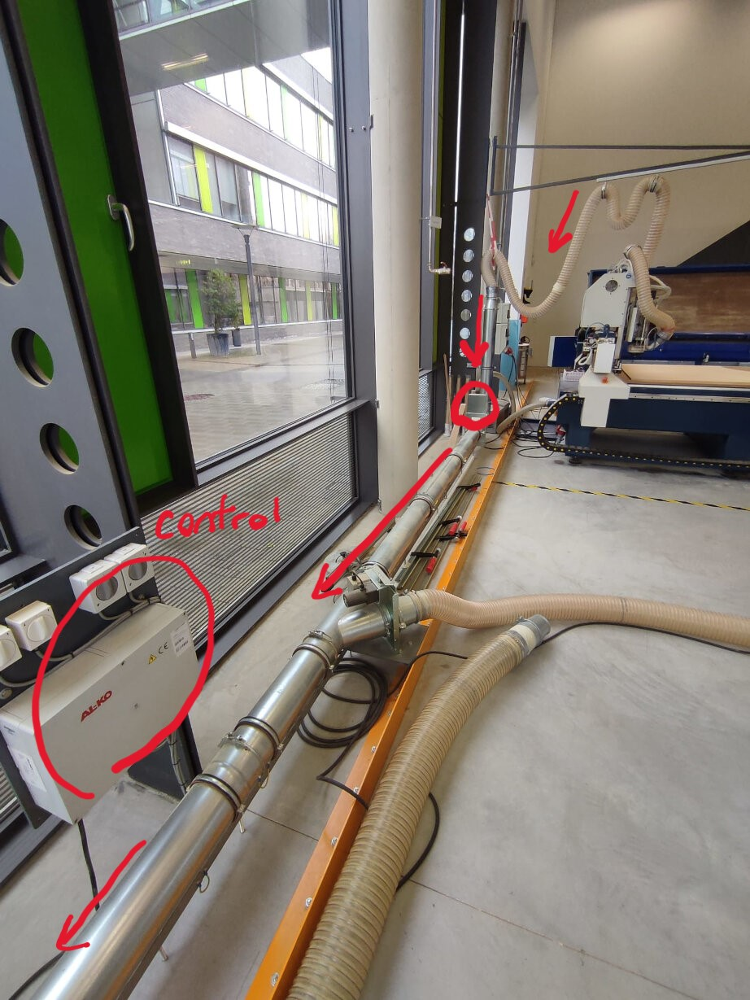
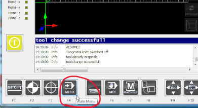

ABOUT OUR MACHINE
The big CNC in our lab is the "eLsign EasyWorker MasterPro 2513".
- The machine has a working area of 2500mm x 1300mm x 200mm.
- The machine operates at a speed of up to 19,000mm/min, ensuring swift movement and processing.
- Precision linear guidance is utilized for accurate and smooth guidance.
- In terms of data formats, the machinery is compatible with G-Code and HPGL.
- Last but not least, the power supply requirements are versatile, accommodating either 3 Phases or 1 Phase with a voltage of 400V or 230V.
- an extension to the vacuum/ dust collection system plus the structure mounted to hold up the tube, plus the actual vacuum
- Automatic tool exchange
The technical data for the CNC is as follows:
Additional modifications:
CAM with Fusion 360
In our CAM processes, we employed Fusion 360. To thoroughly assess runout, alignment, fixturing, speeds, feeds, materials, and toolpaths, we designed test pieces for comprehensive testing.


Machine Safety
The CNC machine is a powerful tool that can be dangerous if not used properly. It is important to follow the safety guidelines to ensure that you and others are safe while using the machine.
Operating the Machine
- Turn on the high-pressure valve.
- The machine's power is connected, but it is typically locked with a padlock on the main switch.
- Preparation
- Reset.
- Start.
- Turn on the computer.
- The computer used to control the CNC machine is turned off before use and is usually
locked in a case.
(Users must request the instructor to unlock the case to access and turn on the
computer)
- Prepare Extraction System
- Turn on the dust collection system.
- In the control station for the extraction system, make sure the path to and from the CNC is open. (Because there are other machines connected, when you are only using the CNC, close off the other exits for better extraction.)

- Software Setup
- Start up the program. The software we use is CNC 4.0.
- Home the machine. Press the safety button and the home on the physical control or on the program press "home".
- Set the Tool
- The controls show homing is done, so we can set the tool. To do this, first go to "F11" (user menu) then "F6" to get the tool. During this process, it is crucial that you are aware of the machine's movements and be ready to stop in case there are any errors. It is recommended to start from the end of the machine so that the path it takes to change/pick up the tool is longer, thus giving us more time to react if it doesn't go properly.


- Material Preparation
- Load the bed with the material we are going to use.
- Secure the Material
- We can secure it directly, fastening it to the table of the CNC router. This can be done using clamps (preferred method), screws, tape, and even glue. It is important to make sure the material is secure and will not move during the process.
- Utilize Vacuum Bed
- Along with the direct ways of securing the material to the table, we also turn on the machine's vacuum bed. Choose the area your material will be occupying to maximize the adhesion.
- Job Loading
- Now load the job. First, we go back to the main menu with "F11" then "F4" auto then "F2" to load and choose your file.
 - Check the tool is set correctly
- Check the material is secure
- Check the extraction system is on
- Check the job is loaded
- Cut the job in the air (setting the z zero above the material in the air) to check if everything is as it should
- Set the actual Z zero
- Once the check list is done, we can set the actual Z zero. This part is a two person job, where one controls the machine on the computer and the other holds the sensor in place and instructs the other on how much to move down
- F2 to go down until it touches the sensor surface
- Start the Job
- once we are sure everything is in order we can start the job. Note that there should always be someone present while the machine is being operated, never leave it un attended
- Post Job
- Once the job is done, turn off the vacuum bed and the dust collection system.
- close the software and turn off the computer
- finally turn off the machine
- lock the computer case
- remove the leftover material and keep the work area organized, put back the clamps, eye and ear protection.
Go through the check list one last time:
Results
Milling the part did not take long, only about 10 minutes. As we used an upcutting tool, the edges were relatively rough. However, a bit of sanding solves this issue.
Milling this part was not only conducted to sow us how we can use the CNC to fabricate parts we designed but also to test special parameters for the CNC. These are in principle the fixturing of the material and the speeds during cutting and after the milling was completed, the runout, alignment and tolerances of finger joint press fits.
Fixturing
The fixturing was achieved by a vacuum bed with clamps for additional security. The vacuum bed alone would have been enough for the part as even hitting the wood slightly from above in an angle did not appear to move it. Of course, additional clamping is always recommended.
Spindle Speed
During the milling, we manually decreased the spindle speed from 15000 rpms to 12000 rpms. However, only by listening to the machine, we assessed that lowering the spindle speed is not a good idea. The sound is difficult to describe but it could be described as "ugly". Instead of a purring cat the machine was screaming at the lowered spindle speed. Therefore, we increased it to 20000 rpms which definetly made "happier" sounds.
Runout

The runout is the deviation of the actual cutting width from the diameter of the milling bit. We tested this with the pocket on the smaller part of the test piece. Here, the slot was designed to be 6 mm wide, exactly the width of the tool. Therefore, the CAM generated a toolpath of only one pass such that the milling bit only passed this pocket once. Also depth-wise the cut was accomplished in a single pass as the depth of the pocket of 3 mm is less than the stepdown size of 3.5 mm for this tool, as we defined in the settings for the tool in the CAM.
By using a calliper, we measured the width of the pocket to be 6.00 mm. With the precision of the calliper of 0.05 mm (or plus and minus 0.025 mm) we concluded that the runout is less than 0.025 mm deviating from 6.00 mm.
Alignment

Testing the alignment means to test whether the axis of the CNC are exactly orthogonal and by this whether a rectangle in the design is also exactly rectangular in reality when milling it. For this, we used the two orthogonal sides of the larger part of the test piece and an "L"-shaped tool called a machinist's square.. This tool has two orthogonal sides which can be used to investigate if other presumably 90° corners are actually 90° or not. Simply by positioning it on the corner and looking at it against the light can show whether the edges deviate from the tool's edges.
In our case, no light was visible between the test piece and the square tool. Therefore we conclude that the alignment af the x- and y-axes are prefect.
Joint Tolerances

During CAM for this test piece, we defined the tolerance to be 0.01 mm. This CAM tool however always subtracts more material defined by this tolerance. Hence, for a loose fit, the tolerance must be increased. To test the tolerance we used, the two parts can simply be joined together - or lets say it can be tried. Sometimes the fit is too tight and it cannot be joined. This was actually not the case for us but we did a design mistake. Due to it, the length of the slot was shorter (48 mm) than the length of the finger (50 mm).
However, the tolerance can still be tested with the width. Here, we just joined a corner of the finger instead of the whole finger with the slot as shown in the image. This fit was quite loose but also not too loose as the joined pieces can be lifted up only by touching the smaller piece. A tolerance of 0.01 mm is therefore a good fit.